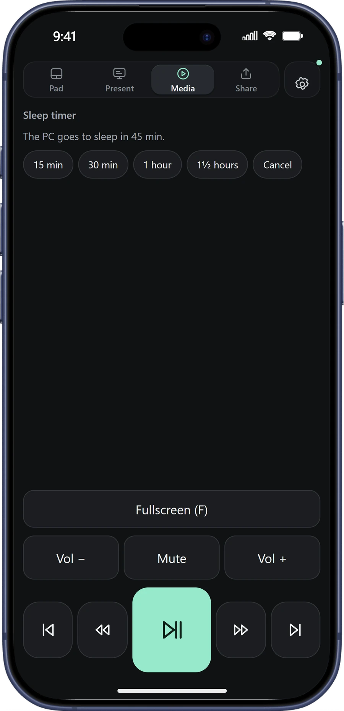
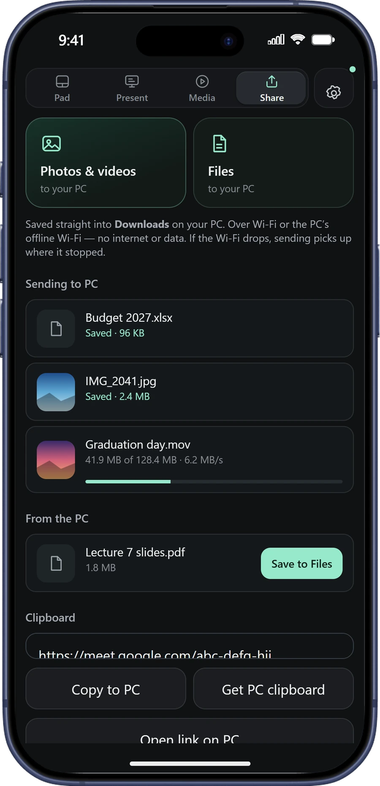

Free for Windows · iPhone & Android
Your phone is the only mouse you need.
MyCursor turns the phone in your pocket into a touchpad, a presentation clicker and a TV remote for any Windows PC — over Wi-Fi, over Bluetooth, or with no internet at all.
27 MB · Windows 10 & 11 · No account · Nothing to install on the phone
Touchpad
Forget the broken touchpad.
Slide, tap and scroll on your phone and the PC responds like it has a real mouse plugged in. Even on laptops with no working touchpad at all.
- The real Windows pointer, moved the way a USB mouse moves it, with your own speed settings.
- A thumb-sized scroll wheel cut into the pad. Flick for long pages, tap for middle click.
- Type live: every letter, correction and Backspace appears on the PC as you type.
- Pinch to zoom, hold Left to drag, two-finger tap to right-click.
For lecturers, speakers and pitches
A clicker that can’t run out of battery.
Walk away from the laptop. Your phone shows what’s next, how long you have, and what you meant to say.
- Speaker notes from PowerPoint on your phone, for the current slide.
- Slides change even if PowerPoint isn’t the active window — no lost clicks after you touched something else.
- A talk timer that warns you before time is up.
- Black screen and zoom that follows your pointer, back to normal in one tap.
- Works with Google Slides and PDFs too.
Media
Movie night, from the sofa.
Play, pause, skip, volume and fullscreen — plus a sleep timer that puts the PC to sleep when the film ends.

Share
Send it to your PC. No cable, no data.
Photos and documents land in your PC’s Downloads. Right-click any file on the PC → Send to → MyCursor phone. Transfers survive Wi-Fi drops, and nothing goes through the internet.

Made in Rwanda
Built for where the internet isn’t.
MyCursor talks to your PC directly. It never needs the internet, a router, mobile data or a cloud account.
The everyday way. Scan the code once and the app finds your PC by name on any network.
No router? Your PC makes its own Wi-Fi in one click. Join it, and you’re connected — no internet involved.Uses Windows Mobile Hotspot; most Wi-Fi laptops support it.
Android phones can connect by Bluetooth and keep their own internet for everything else.iPhone browsers don’t allow Bluetooth for web apps, so iPhones use Wi-Fi.
How it works
Set up in three steps.
Run MyCursor on your PC
Download MyCursor.exe and open it. It starts with Windows from then on, so it’s ready whenever you are.
Scan the code
Point your phone’s camera at the code on the PC and open the link. No app store, nothing to install.
Add it to your Home Screen
One tap later, MyCursor sits on your phone like any app. Open it and it connects.
One phone instead of three gadgets.
| MyCursor | Presentation clicker | Mouse | |
|---|---|---|---|
| Moves the pointer | Yes | Rarely | Yes |
| Changes slides from across the room | Yes | Yes | No |
| Speaker notes and timer in your hand | Yes | No | No |
| Typing, files and media control | Yes | No | No |
| Batteries or a USB receiver to lose | None | Yes | Often |
| Price | Free | Bought separately | Bought separately |
Questions
Good to know.
Is MyCursor really free?
Yes. No ads, no account and no subscription. Your files and typing never leave your own devices.
Which phones and computers does it work with?
Any iPhone or Android phone with a modern browser, controlling a Windows 10 or 11 PC. Mac support is not available yet.
Do I need internet?
No. Your phone talks to your PC directly over the same Wi-Fi, over the PC’s own offline Wi-Fi, or (on Android) over Bluetooth.
Can it see my screen or my files?
No. MyCursor only sends pointer, keyboard and slide actions to your own PC. It never sees your screen, and files move only when you choose to send them.
Windows says “Windows protected your PC”. Is that safe?
Windows shows this for new apps that aren’t yet digitally signed. Choose More info → Run anyway. Then click Yes when asked to let phones connect; this only opens MyCursor to your local network.
Do I need PowerPoint?
No. Next, Back and black screen work with PowerPoint, Google Slides, PDFs and most slide apps. Speaker notes on the phone need PowerPoint.
My laptop has no working touchpad. Will the pointer show?
Yes. Windows hides its pointer when it finds no mouse; MyCursor brings the real pointer back while it runs and restores your settings when it closes.
Leave the mouse at home.
Free · Windows 10 & 11 · Setup guide